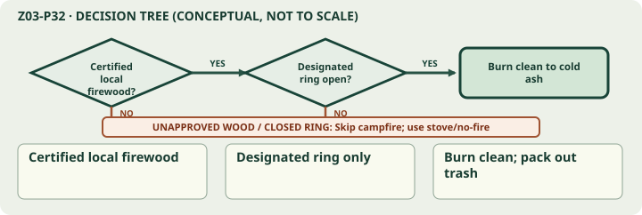

Z03-P32 · Fire and ignition · New manuscript
Follow certified local firewood rules and designated fire-ring limits
Prevent invasive forest-pest introductions and illegal fire scars when camping in parks and forests.
When it applies · State parks, campgrounds and managed recreation areas across Minnesota and the Upper Midwest.
Equipment · Local park fire regulations, approved/certified local firewood and established designated fire ring.

Actions
- Buy or obtain only local or state-certified firewood approved by the park unit; transporting untreated firewood across counties spreads emerald ash borer and other destructive forest pests.[C20]
- Build fires strictly inside designated metal or stone fire rings where required—do not stack new rock rings on untouched soil or burn trash, plastics or foil inside rings.[C20, C02, C17]
- Burn firewood completely down to cold ash and pack out unburned food wrappers or foil after verifying full extinguishment.[C04, C17, C20]
Failure recognition · Hauling home yard-tree logs across regions into a state park or leaving half-burned trash smoldering in a makeshift rock circle.[C20, C04, C17]
Verify · Confirm firewood meets current unit certification rules, fire stays inside the designated ring and zero trash enters the fire.[C20, C02, ED]
Stop or change course · If approved firewood is unavailable or designated rings are closed, skip open fires and use a permitted stove or no-fire food and warmth options.[C20, C01, C08]
Evidence and editorial notes
- C01 · Minnesota DNR · Fire Danger and Burning Restrictions (current web edition; verify at use)
- Section: Fire danger and burning restrictions map and links · Conditions: Current Minnesota location, date and jurisdiction
Support: Check current restrictions and local authority requirements before lighting.
Limitations: Restrictions can change daily with humidity, wind, and drought; verify immediately before use. · Conflicting evidence: None; local jurisdiction always supersedes general notes.
Editorial note: Mandatory legal check before any live fire card. · Specialist reviewer: Fire prevention and local land management
Primary source · checked 2026-11-24 - C02 · USDA Forest Service / Smokey Bear · Smokey Bear’s Campfire Safety Guide (agency PDF)
- Section: Build your campfire; choose a location · Conditions: Where campfires are currently permitted
Support: Use an established fire ring where required or available. Protect the area from nearby combustible materials, avoid windy conditions and keep water ready.
Limitations: Site clearances vary by fuel load, slope, and wind; no universal safe radius fits all terrain. · Conflicting evidence: None; aligns with USFS-FIRE.
Editorial note: Grounds site-selection and ring-preparation procedures. · Specialist reviewer: Fire prevention and land management
Primary source · checked 2026-11-24 - C04 · USDA Forest Service / Smokey Bear · Smokey Bear’s Campfire Safety Guide (agency PDF)
- Section: Maintain and extinguish a campfire · Conditions: Occupied campfire, water and tools available
Support: Stay with the fire. Drown, stir and add water again until cool. Leaving visible embers or merely covering them is unsafe.
Limitations: Deep duff or peat soils can hold smoldering embers underground even after surface ash cools. · Conflicting evidence: None; prohibits dirt-only burial as primary extinguishment.
Editorial note: Enforces drown-stir-feel-cold cycle before site departure. · Specialist reviewer: Fire prevention and land management
Primary source · checked 2026-11-24 - C08 · NWS · What To Do If You're Caught in a Winter Storm (current web edition)
- Section: Outside > If there is no shelter nearby · Conditions: Stranded outdoors during a winter storm
Support: Seek shelter and block wind and wet exposure. Reduce heat loss from contact with snow or ground.
Limitations: Does not guarantee overnight survival without adequate insulation or rescue. · Conflicting evidence: None; reinforces no-fire exposure control priority.
Editorial note: Anchors no-fire fallback when ignition fails or is banned. · Specialist reviewer: Cold-weather shelter specialist
Primary source · checked 2026-11-24 - C17 · NPS · Leave No Trace Seven Principles (current web edition)
- Section: Principle 5 > Minimize Campfire Impacts · Conditions: Permitted backcountry sites where wood fires are allowed
Support: Where fires are permitted, keep fires small, use only dead and downed wood gathered lawfully, burn wood completely to ash, and use a camp stove where wood is scarce or impacts are high.
Limitations: Some parks prohibit all wood gathering or open fires regardless of deadfall availability. · Conflicting evidence: None; balances lawful fuel collection with habitat protection.
Editorial note: Guides lawful fuel gathering and small-fire thermal management. · Specialist reviewer: Land management and fire prevention
Primary source · checked 2026-11-24 - C20 · Minnesota DNR · State Park Rules (current web edition)
- Section: Minnesota State Park Rules > Firewood and Fires · Conditions: Minnesota state parks and public campgrounds
Support: Build fires only in designated rings where permitted and use only approved local or certified firewood to prevent invasive forest-pest spread.
Limitations: Rules differ between state parks, state forests, and federal wilderness areas; verify unit rules. · Conflicting evidence: None; regionalized legal compliance for Minnesota.
Editorial note: Documents lawful wood sourcing and designated-ring constraints. · Specialist reviewer: Land management and forestry
Primary source · checked 2026-11-24
Source lineage · Minnesota DNR park rules and NPS Leave No Trace; new manuscript · Classification · New manuscript.